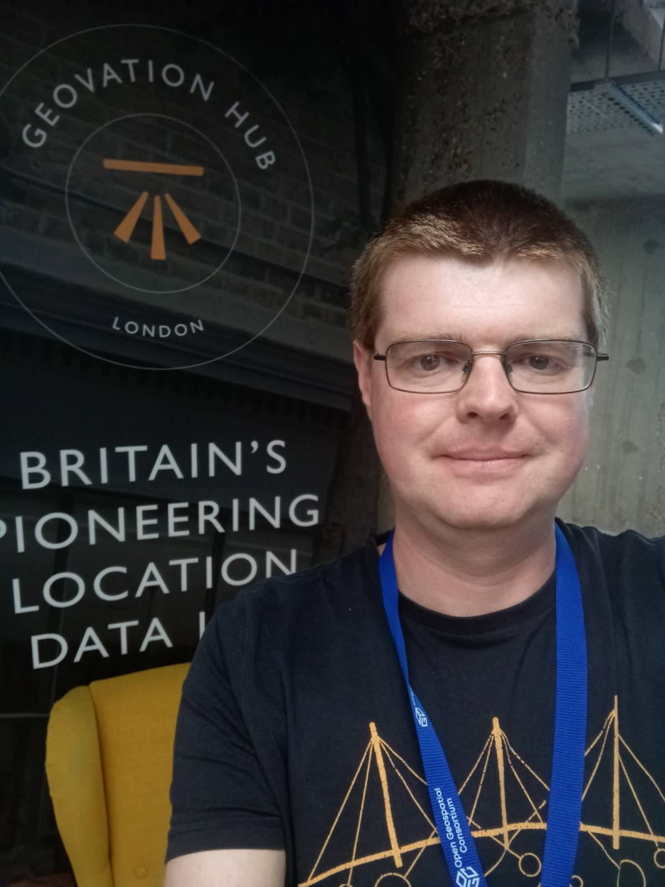
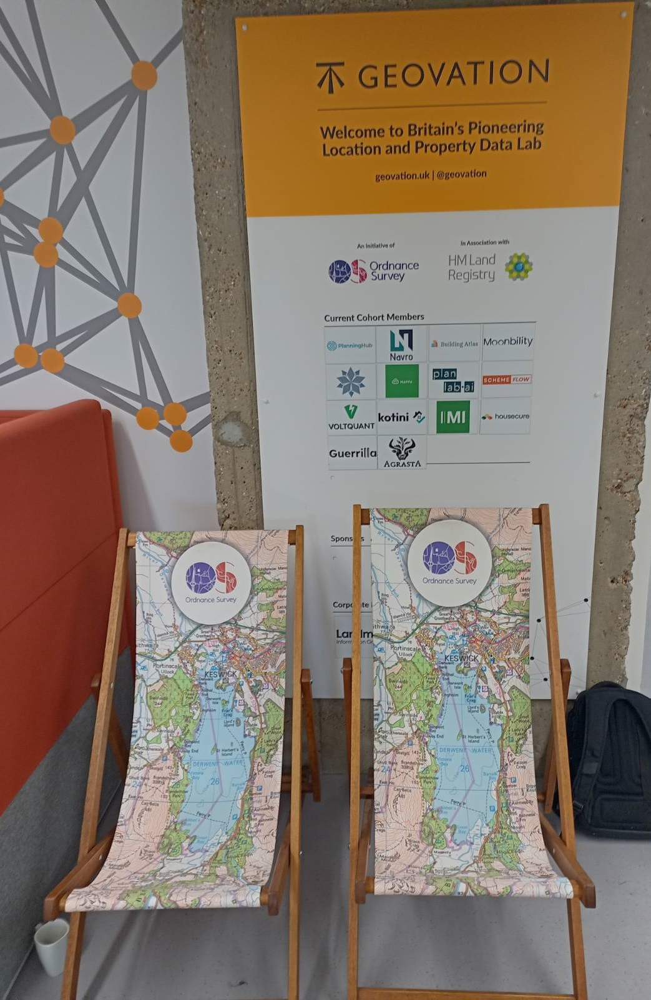
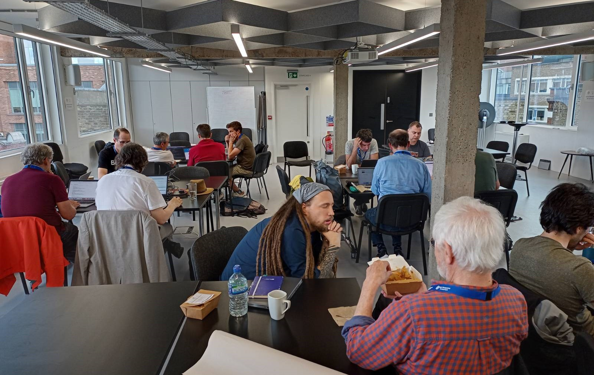

OCG Open Standards Code Sprint, Geovation, London, UK
In July I spent three days at Geovation in London attending the OGC Open Standards Code Sprint. OGC, the Open Geospatial Consortium manage and approve standards for geospatial data. Many people working in geospatial have heard of them, and have at least a vague idea that they do geospatial standards, even if they don’t know the details of what they do - the position I was in! Dr. Gobe Hobona, Director of Product Management, Standards at OGC, is a regular attendee at FOSS4G:UK and other geo related conferences, and recommended I come along.
|  |  |
I’ve attended some Code Sprints before, including FOSS4G 2022 in Florence but I had never attended a OGC Code Sprint before. They run 4 or 5 a year, each with a different theme, and run one every year in London, usually at Geovation. Gobe had recommended I attend, and as London is relatively accessible for me (compared to Évora, Portugal; St. Louis, MO, US or Geneva, Switzerland; there other venues) I thought I would go along.
Mentor Stream
Given that OGC were running it, the focus was on standards, as you would expect. However they don’t require a knowledge of standards to attend - they welcome people with any knowledge of OGC standards, including none. For these folks, and those new to code sprints, they run a mentor stream on the first day, running a series of sessions on each of the standards being discussed at the code sprint. This time this included Adding Support to a new OGC API in pygeoapi, SensorThings API WebSub Extension, Consuming OGC API - Connected Systems through OWSLIB and Applying TrainingDML-AI among others, with a short presentation and discussion given by the senior people involved with that standard attending the code sprint.
This code sprint was hybrid, with some people attending online via Discord (including one of the mentor stream presenters). Discord worked well, with a number of channels for different discussions based around topics as well as the mentor stream. We had about 20 people attending in person, with another 6-8 attending online.
Attending the mentor stream was a good starting point, but after a bit of reflection, I discovered that I am not a “standards person”. I have always slightly struggled with policy aspects, one of the reasons I have not pursued my work with ethics & the Locus Charter. However I discovered I wasn’t the only person there who wasn’t a “standards person”. I found some of the standards quite abstract and didn’t really manage to see how some of them relate to my every day work with geospatial data.
Training DML-AI
One particular standard being developed was the Training ML standard, which was trying to develop automated ways of developing metadata for AI Training Data. I am no AI expert, but even I have picked up on the recent growth in AI and related terms. One key aspect of any AI is that it needs training data - in a very similar way to a supervised classification of a satellite image from remote sensing. A small sample of the data is categorised by a human, sometimes by us (Google reCAPTCHA). For example, this scene has cars in it, in this CCTV there is a bike, this image has a lake in it, etc. Then this 10-20% of the data is used to train the AL model, which then classifies the rest of the data.
So there are many different ways of identifying and classifying a) the training data itself (how much, resolution, etc.) and b) what training process has been applied to it (how much trained, by whom, when, what labels, etc.). There is no systematic way of recording who did what to this data. If we want people to be able to reuse this training data, we need to record this information. Ideally we want this to be machine readable so a) when data is used for training this metadata can be recorded automatically (as very few people bother to record metadata, even when it is required) and b) when the training data is used in other models, some judgement can be made about whether the training data is appropriate for the model it is being applied to.
This topic appealed to me as I could clearly see the benefit of this. The standard has a GitHub repository, which also makes use of the pytdml library which provides some of the tools to do this. Unfortunately the library and related tutorial didn’t work as expected - partly because there were some changes to the library the day before the session, and partly because the planned Jupyter Notebook wasn’t able to be developed in time for the session.
This library was in Python and I am not a Python expert. I was struggling to get it to work, and fortunately I had the benefit of Daniel’s experience to help me with this (someone else attending the code sprint). I wasn’t experienced enough to know whether I was doing something wrong, or whether the library was broken. He reassured me that it was the library that wasn’t working, rather than me getting things wrong!
Getting help from others is one of the big benefits of attending a code sprint and I got much further with the tutorial that I would have had I been on my own. Each day we also had a “stand up” at the beginning to say briefly what we were going to do and a “brief back” at the end to say what we had done. In these people shared their experiences and I think it’s fair to say most people progressed quite slowly. Many people didn’t get a huge amount done on the first day and it was reassuring that I wasn’t the only one not making a lot of progress! In fact, someone who had a reasonable amount of experience had essentially a days work that ended up being no use! He had two routes to take to develop a certain feature - the easy route or the hard route. He started off spending a day working on the easy route and then realised it was a dead end - so had to start again on next day with the hard route! It’s very reassuring that everyone goes through this process - newbie or experienced.

Over the code sprint I learnt quite a bit more about Python and how it works with different packages and virtual environments. I also experience Python dependency hell, with circular dependencies meaning we had to do various unpicking’s of both my setup and the library to work out what was going on.
R tmap v4
I also spent a bit of time working on the R tmap library. I was the only person working on R there (probably partly because this clashed with the UseR conference so many R Spatial people were there in Salzburg, Austria!). Tmap version 4 is coming, so I needed to re-write some of my practical workbooks to make the mapping code work with version 4. V4 isn’t out on CRAN yet, but I want to be prepared when it is released, which I think will be later this year. See these pages for more details. I updated the code for one of my courses I am running this week. I also added a little bit of information to the tmap website so it is a bit clearer to new uses that tmap 4 is coming and some suggestions as to how the code has changes and how they can try it out: short version - try it on posit.cloud rather than risk messing up your current installation!
Demo & Wrap-up
At the end of the code sprint we had a demo and wrap up where everyone demoed what they did and it was fascinating to see what people had done. I also discovered a new QGIS plugin (EDR) and as I mentioned I was working in R, I had a couple of interesting discussions about how R package management compares with Pythons package management.
Overall I am glad I gave the OGC Code Sprint a try. I’m not sure whether I would do it again; it’s good to see what people are doing in the geospatial standards world and have some time to try bits out, but I really struggled with a lack of concrete examples that were relevant to my experience. If you are interested in standards in general, or they are working on a specific standard or tool you are interested then I would really recommend attending. If there are any code sprints on spatial tools in R, then I will certainly be attending if I can!
If this has got you interest, I am involved in running Code by the Coast, OSGeo:UK’s next Code Sprint on 30th July in Portland, Dorset, UK. We are running this as an in-person event only. Check out the website for more details. We will have groups working on Terra Draw, GIFramework and Registering your project as a OSGeo Community project. I may even be doing some R work too!